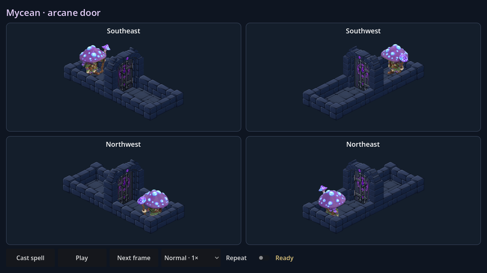

Mycean · incantation arcanique
Des spores lumineuses se rassemblent au sommet du bâton. Deux filaments brumeux s’enroulent jusqu’au sceau ; ses runes s’animent puis se dispersent à l’ouverture.

Dans Godot : MyceanArcaneDoor.tscn puis F6. L’animation, le sort et l’ouverture partagent une seule horloge. Les filaments sont naturellement masqués lorsqu’ils passent derrière la porte.
Le même héros et la même porte
Seul l’effet magique a changé. Les sprites, le battant, les raccords et la durée de l’incantation sont conservés. Le flux est calculé en temps réel et réutilise la texture de halo existante : aucune nouvelle image lourde.
Formats de test
Prévisualisation isolée, pas encore reliée aux raids. Reproduction et vérifications.